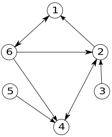

Lanț. Drum
Definiție:
Fie G=(V, U) un graf orientat. Se numește lanț, în graful G, o succesiune de arce, notată
L = (u1 , u2 ,..., uk) cu proprietatea ca oricare două arce consecutive au o extremitate comună (nu are importanță orientarea arcelor).
sau
Definiție: Fie G=(V, U) un graf orientat. Se numește lanț, în graful G, o succesiune de noduri, notată
L = (x1 , x2 ,..., xp) cu proprietatea ca oricare două noduri consecutive sunt adiacente.
Lungimea unui lanț este egală cu numărul de arce din care este alcătuit.
Primul nod și ultimul nod dintr-un lanț formează extremitățile lanțului.
Un lanț (drum) se numește elementar dacă în el nu se repetă noduri.
Un lanț (drum) se numește simplu dacă în el nu se repetă arce.
|  |
Definiție:
Se numește circuit un drum simplu în care extremitatea inițială și finală sunt egale. Se numește circuit elementar un circuit în care, cu excepția extremităților, nu se repetă noduri.
Lungimea unui circuit este reprezentată de numărul de arce din care acesta este alcătuit.
Exemple În graful alăturat:
(1,6,2,1) și (1,6,4,2,1) sunt circuite elementare.
|